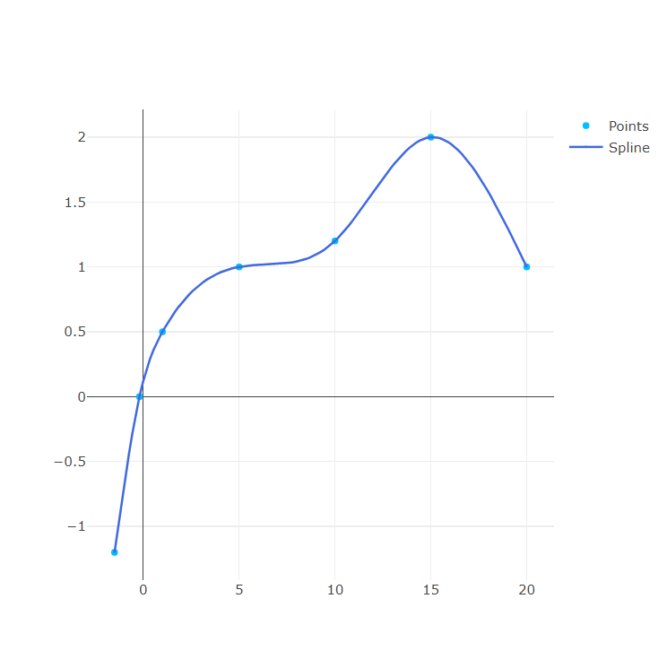

Splines Cúbicas
Conceito
A aproximação polinomial por partes mais comum usa polinômios cúbicos entre cada par de nós sucessivos e é chamada interpolação por spline cúbico. Um polinômio cúbico geral envolve quatro constantes; logo, existe flexibilidade suficiente no proce-dimento de splines cúbicos para assegurar que a função interpoladora seja não somente continuamente diferenciável no intervalo, mas também tenha uma segunda derivada contínua. A construção do spline cúbico, entretanto, não supõe que as derivadas da função interpoladora coincidam com aquelas da função que está sendo aproximada, mesmo nos nós.
